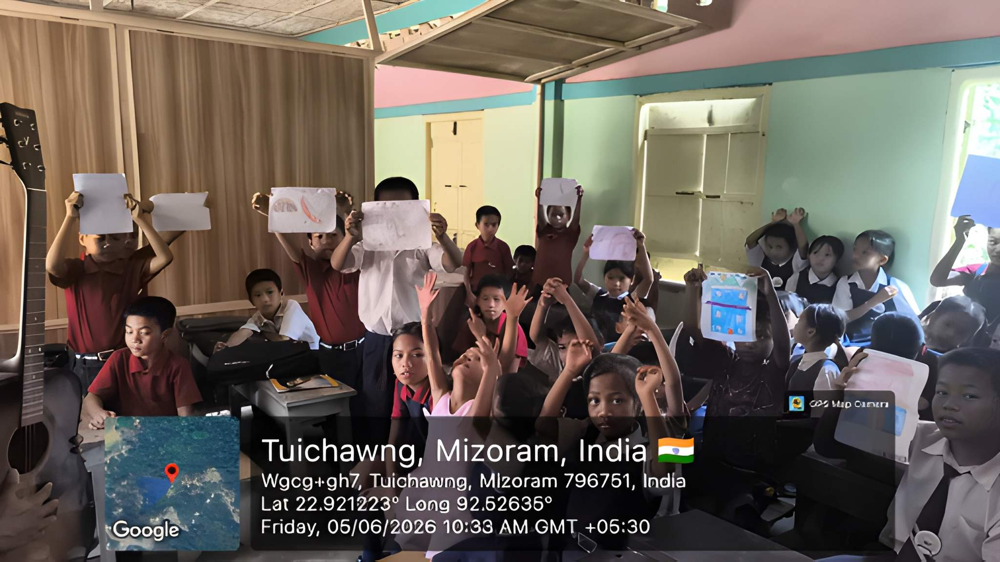
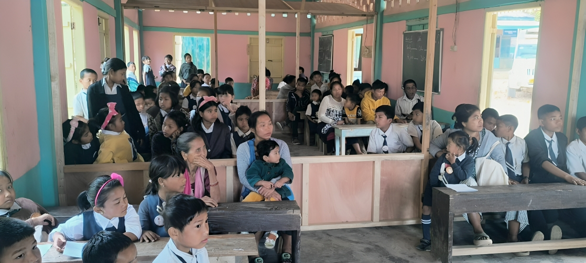
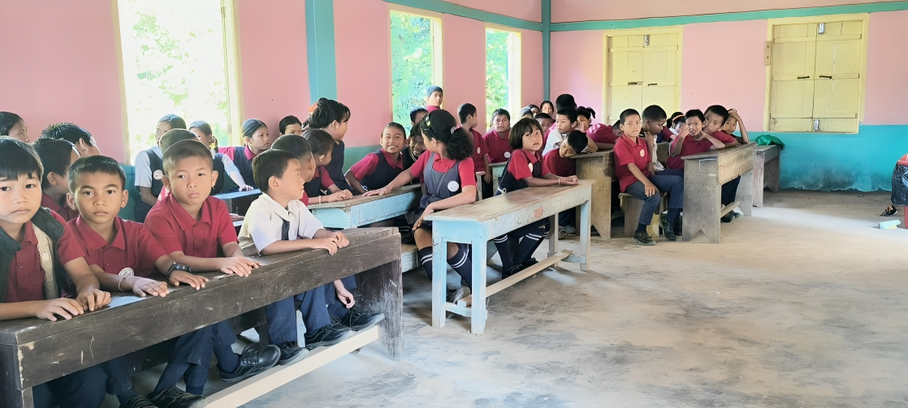
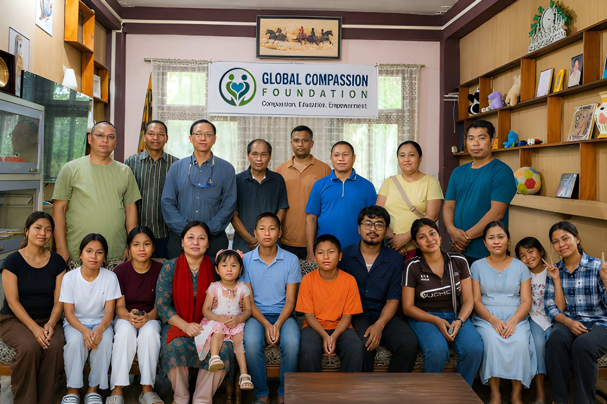
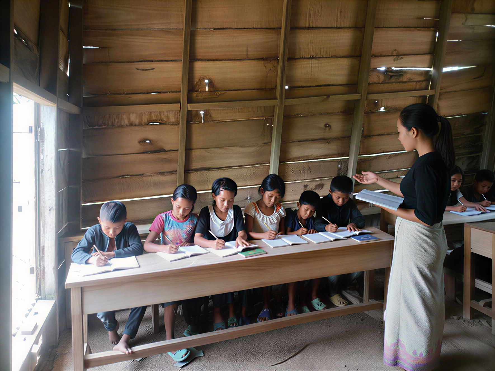
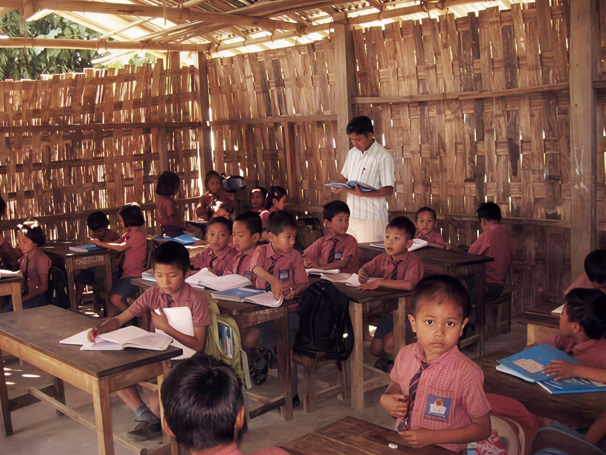

Important Notice: At present, Global Compassion Academy has not yet been established. It remains a proposed educational project that Global Compassion Foundation hopes to implement in the future with the support of donors, partners, and well-wishers.
Global Compassion Academy
A Vision for Inclusive, Value-Based, and Holistic Education in Remote Mizoram
Global Compassion Foundation (GCF) is currently working toward the long-term vision of establishing Global Compassion Academy, a proposed inclusive, value-based, and holistic school for underserved tribal children living in Tuichawng Village and more than 25 surrounding remote villages in Lunglei District, Mizoram, Northeast India.
We hope to build a nurturing learning space that makes quality education accessible to tribal families in remote border valleys, providing children with pathways out of generational poverty.

The Meaning of Global Compassion Academy
The proposed name reflects the values, ethics, and vision that we hope the institution will embody in Mizoram.
Global
Represents our belief that every child, regardless of their location or background, deserves equal opportunities to learn, grow, and participate in an interconnected world.
Compassion
Represents kindness, empathy, respect, service, and concern for the well-being of others. We believe education should nurture both knowledge and humanity.
Academy
Represents a place of learning, character formation, leadership development, creativity, and lifelong growth. Combining academic excellence with social responsibility.
Why This Project Is Needed
Tribal children living in remote villages face significant barriers to education. Our proposed academy addresses these local challenges.
Poverty and Economic Hardship
Most families depend on subsistence farming, leaving them without resources to support quality learning or school supplies.
Geographical Isolation
Deep forest settlements in Lunglei District are cut off from major administrative and educational centers.
Limited Educational Infrastructure
Existing primary structures are basic, lacking modern activity rooms, libraries, and basic teaching tools.
Inadequate Learning Resources
Textbooks, regional language materials, and reference books are in short supply in remote community schools.
Long Distances to Facilities
Children must traverse steep and hazardous mountain paths for hours to reach secondary classrooms.
Limited Access to Technology
Digital learning systems are practically absent, creating a wide technological divide for tribal students.
Lack of Safe Environments
Remote layouts lack structural safety, clean water, and nutritional backup necessary for steady attendance.
Educational Vision
If adequate funding and resources are secured, GCF intends to operate Global Compassion Academy as a model institution promoting holistic development, blending state academic standards with character training and indigenous heritage preservation:
Planned Facilities
Subject to availability of funding and land clearances, the layout of the project is planned to incorporate critical infrastructure designed for safety, sustainability, and complete community integration:
Our Project Roadmap
GCF has outlined structured development phases to transform this educational vision into a reality on the ground in Mizoram.
Phase 1: Community Mapping & Feasibility
ActiveConsultations with village elders, CADC district councils, and local tribal committees to map regional enrollment demands, document transport constraints, and assess language requirements.
Key Milestones
- Conduct surveys in 25 remote border villages
- Secure tribal community leader alignments
- Draft CADC administrative request files
Phase 2: Mobilization & Funding Campaigns
PlannedLaunching public sponsorship campaigns, securing initial grants, and engaging corporate social responsibility (CSR) partners to fund physical material acquisition.
Key Milestones
- Launch global digital crowdfunding portal
- Partner with international philanthropic trusts
- Present pitch deck to institutional donors
Phase 3: Land Allocation & Safety Audits
PlannedSecuring land clearances in the Tuichawng sector, resolving local zoning procedures, and conducting environmental water safety audits to establish safe, potable gravity water pipelines.
Key Milestones
- Formal land lease agreement finalized
- Clean water source testing reports
- Topographic surveying for earthquake resilience
Phase 4: Classroom & Infrastructure Build
PlannedBuilding the initial phase structures (multipurpose classrooms, basic library hub, separate hygienic sanitation blocks, and connecting water filtration pipelines).
Key Milestones
- Foundation laying and timber/bamboo framing
- Installation of solar power micro-grid panels
- Setup of community sanitation modules
Phase 5: Curriculum Design & Local Staffing
PlannedSetting up inclusive curricula blending core literacy with native script education, character formation, and training dedicated regional educators.
Key Milestones
- Create dual-language educational assets
- Hire and onboard certified teachers
- Conduct community enrollment campaigns
Phase 6: Academy Inauguration & Launch
PlannedOpening classroom doors to the first cohort of underprivileged tribal children from 25 valley communities in remote Mizoram.
Key Milestones
- Ribbon-cutting and community blessings
- Distribute uniforms, books, and solar lamps
- Launch first formal school academic calendar

The Role of Global Compassion Foundation
Global Compassion Foundation will serve as the implementing agency responsible for planning, coordinating, developing, and managing the project if sufficient funding and resources become available.
The Foundation is committed to transparency, accountability, community participation, and sustainable development throughout the implementation process.
How You Can Support This Vision
As a small grassroots organization, we cannot achieve this vision alone. We warmly welcome collaborations across fields:
Financial Contributions
Direct sponsorships, CSR partnerships, and grants help fund infrastructure material acquisitions.
CSR & Partnerships
Educational partnerships, grants, and infrastructure collaborations with development agencies.
Volunteers & Mentors
Technical guidance, curriculum structuring, remote or field mentorship, and direct collaboration.
Our Project Gallery
Global Compassion Academy is currently a vision for the future. However, we believe that with collective effort, compassion, and partnership, this vision can one day become a reality. Take a look at some of the communities we are serving and hoping to empower through education.




"We invite individuals, organizations, institutions, and well-wishers who share this vision to join us in making quality education accessible to children living in some of the most remote communities of Northeast India."
Contact Us to Partner